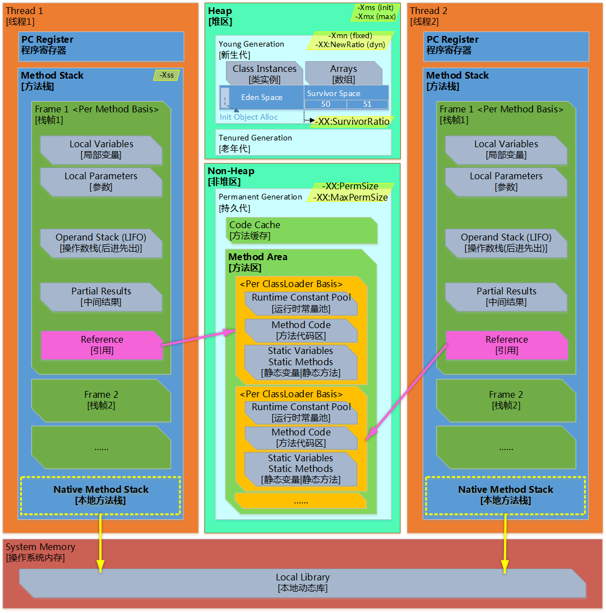

【JAVA】一张图明白JVM内存模型
从一张图看看JVM的内存模型
一张图

图1 SUN JVM 内存模型
图说明
1. 该图适用于SUN JVM JAVA SE 8之前的内存模型，JAVA SE 8后的主要变化是：持久代已经彻底删除，取代它的是另一个内存区域也被称为元空间。
元空间
- 是本地堆内存中的一部分
- 通过-XX:MetaspaceSize和-XX:MaxMetaspaceSize调整
- 当到达XX:MetaspaceSize所指定的阈值后会开始进行清理该区域
- 如果本地空间的内存用尽，会收到java.lang.OutOfMemoryError: Metadata space的错误信息。
- 和持久代相关的JVM参数-XX:PermSize及-XX:MaxPermSize将会被忽略。
2. 堆区 由所有线程共享。当堆耗尽的时候，JVM会抛出java.lang.OutOfMemoryError 异常。